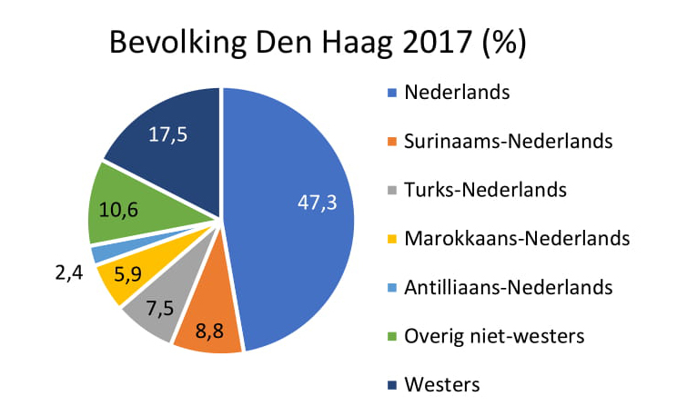
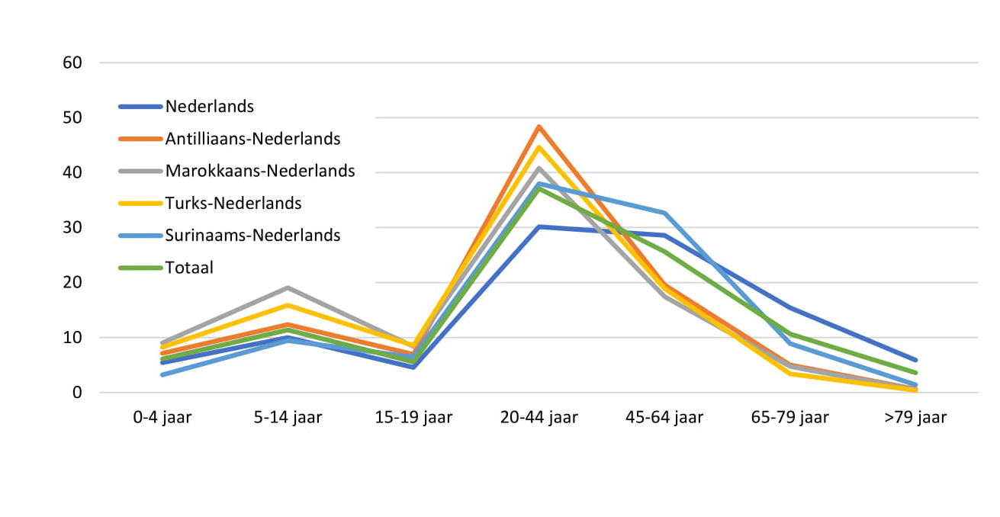

Nederland telt in 2017 17.081.507 inwoners. Veruit de grootste groep inwoners heeft een Neder-landse achtergrond (77,4%), gevolgd door de groep westerse migranten (9,9%). Met een aantal van ruim 150.000 inwoners, vormen de Antilliaans-Nederlandse inwoners een kleine groep in Nederland (0,9%).
2.2 Inwoners Den Haag
Het aantal inwoners met een Antilliaanse achtergrond in Den Haag is hoger dan gemiddeld in Nederland. In 2017 telt Den Haag 525.882 inwoners. Daarvan hebben 12.741 inwoners een Antilliaanse achtergrond (2,4%).

2.3 Vergelijking G4-steden
Van de andere drie grote steden (Amsterdam, Rotterdam en Utrecht) heeft Rotterdam ook relatief een grote populatie Antilliaans-Nederlandse inwoners. Van alle Rotterdamse inwoners, heeft 3,9% een Antilliaanse achtergrond. In Amsterdam heeft 1,5% een Antilliaanse achtergrond en in Utrecht slechts 0,8%.
2.4 Verdeling naar wijken in Den Haag
Wanneer we kijken naar wijkniveau, zijn daar ook grote verschillen in te zien. De wijk Binckhorst is de wijk met relatief het hoogste aantal Antilliaans-Nederlandse inwoners (12,1%). Dit is echter ook een kleine wijk, waardoor percentages snel hoog uitvallen. Kijken we naar absolute aantallen, dan hebben de wijken Stationsbuurt (8,4%), Laakkwartier (4,8%) en Moerwijk (4,8%) het hoogste aantal Antilliaans-Nederlandse inwoners (Haag 2017).

2.5 Leeftijdsopbouw
In Den Haag valt de grootste groep inwoners in de leeftijdscategorie 20-44 jaar (37%). Bijna de helft van de Antilliaans-Nederlandse inwoners is tussen de 20-44 jaar oud. Bij de inwoners met een Ne-derlandse achtergrond ligt dit percentage rond de 30%. Het aantal kinderen en jeugdigen (0-19 jaar) van inwoners met een Antilliaanse achtergrond volgt de lijn van het totale aantal inwoners in Den Haag. Het aantal ouderen is echter weer lager dan gemiddeld. Ditzelfde geldt ook voor oudere inwoners met een Marokkaanse of Turkse achtergrond.
#|table-aligned #|echo=FALSElibrary(knitr)
Warning: package 'knitr' was built under R version 4.1.3
library(kableExtra)myTable<-data.frame(header1=c("Nederlands","Surinaams-Nederlands","Antilliaans-Nederlands","Turks-Nederlands","Marokkaans-Nederlands","Overig niet-westers","Westers","Totaal"),header2=c("6,9","18,1","17,2","13,1","12,2","11,9","7,3","9,4"),header3=c("6,1","22,3","23,9","13,7","15,2","13,6","8,7","10,6"))kable(myTable,col.names =c("Achtergronden", "Den Haag", "Rotterdam"),caption ="Percentage eenoudergezinnen Den Haag en Rotterdam, 2017")
Percentage eenoudergezinnen Den Haag en Rotterdam, 2017
Achtergronden
Den Haag
Rotterdam
Nederlands
6,9
6,1
Surinaams-Nederlands
18,1
22,3
Antilliaans-Nederlands
17,2
23,9
Turks-Nederlands
13,1
13,7
Marokkaans-Nederlands
12,2
15,2
Overig niet-westers
11,9
13,6
Westers
7,3
8,7
Totaal
9,4
10,6
2.6 Eenoudergezinnen
Het aantal eenoudergezinnen in Den Haag is onder inwoners met een migratieachtergrond het hoogst. Inwoners met een Surinaamse en Antilliaanse achtergrond hebben het hoogste percenta-ge ??noudergezinnen (18,1% en 17,2%). Gemiddeld ligt dit percentage in Den Haag een stuk lager, op 9,4%. Ook Rotterdam, een stad met tevens relatief veel Antilliaanse-Nederlanders, heeft een hoog percentage eenoudergezinnen onder de inwoners met een migratieachtergrond. En ook hier valt op dat het percentage ??noudergezinnen het hoogst is onder de inwoners met een Antilliaan-se of Surinaamse achtergrond (23,9% en 22,3% respectievelijk).
2.7 Mogelijke verklaringen
Het feit dat eenoudergezinnen veelvuldig voorkomen bij gezinnen met een Antilliaanse achter-grond, kan verklaard worden door de man-vrouw relatie in Antilliaanse gezinnen. Zo heeft het krijgen van kinderen onder Antillianen historisch gezien geen sterke koppeling met samenwonen of trouwen in vergelijking tot gezinnen met een Nederlandse achtergrond (Distelbrink and Ketner 2011). Een tweeoudergezin is voor velen wel een ideaal, maar ? met name in de lagere klasse ? wordt dat niet altijd gerealiseerd. Deels staan moeders ervan begin af aan al alleen voor en kiezen ze er ook minder snel voor om, nadat ze uit elkaar zijn gegaan, opnieuw te gaan samenwonen met een nieuwe partner (Distelbrink 2000).
Distelbrink, M. 2000. Opvoeden Zonder Man. De Opvoeding En Ontwikkeling in Creools-Surinaams Een- En Tweeoudergezinnen in Nederland. Assen: Van Gorcum.
Distelbrink, M., and S. Ketner. 2011. “Vaderschap Is Geen Playstation.”Pedagogiek 31 (1).
Haag, Gemeente Den. 2017. “Buurtmonitor Den Haag.” https://denhaag.buurtmonitor.nl.